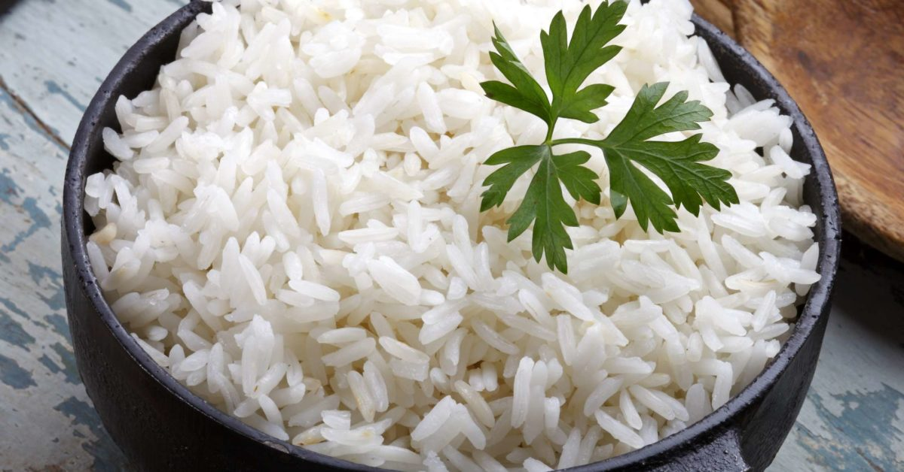

Rice

A bowl of jasmine white rice, great for
simple carbs.
Here's how to make it:
- Measure double the amount of water for every cup of dry rice
- Bring water to boil
- Wash rice in cold water, aggitate with hands.
- Strain water from rice
- Carefully pour rice in boiling water
- Once most of the water has evapourated, bring stove to simmer and cover rice with lid
- After about 15 minutes, rice should be fully and readys